A wiki oficial do Magic & Blocks: blocos mágicos que flutuam na mão, mana, o Nature Infuser, equipamento de Manilium, magos e muito mais para Minecraft 1.20.1 (Forge).
Minecraft 1.20.1Forge 47Curios (opcional)PT-BR / EN
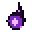
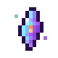
Recursos
Materiais, essências e itens úteis.
27 páginas →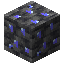
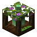
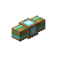
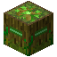
Blocos
Blocos que você coloca no mundo.
27 páginas →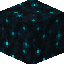
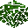
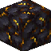
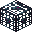
Blocos Mágicos
Blocos que flutuam na mão e dão poderes elementais.
14 páginas →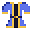
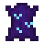
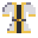
Armas e Armaduras
Ferramentas Instáveis, o equipamento de Manilium e o Talismã dos Blocos.
7 páginas →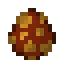
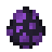
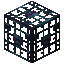
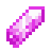
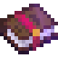
Criaturas
Espíritos Elementais, a Torre Arcana, a Masmorra, a Lua Roxa e os Atributos.
6 páginas →Apoie o mod
Curtiu? Seu apoio ajuda a criar novos blocos, criaturas e atualizações.
❤ Apoiar pelo LivePix